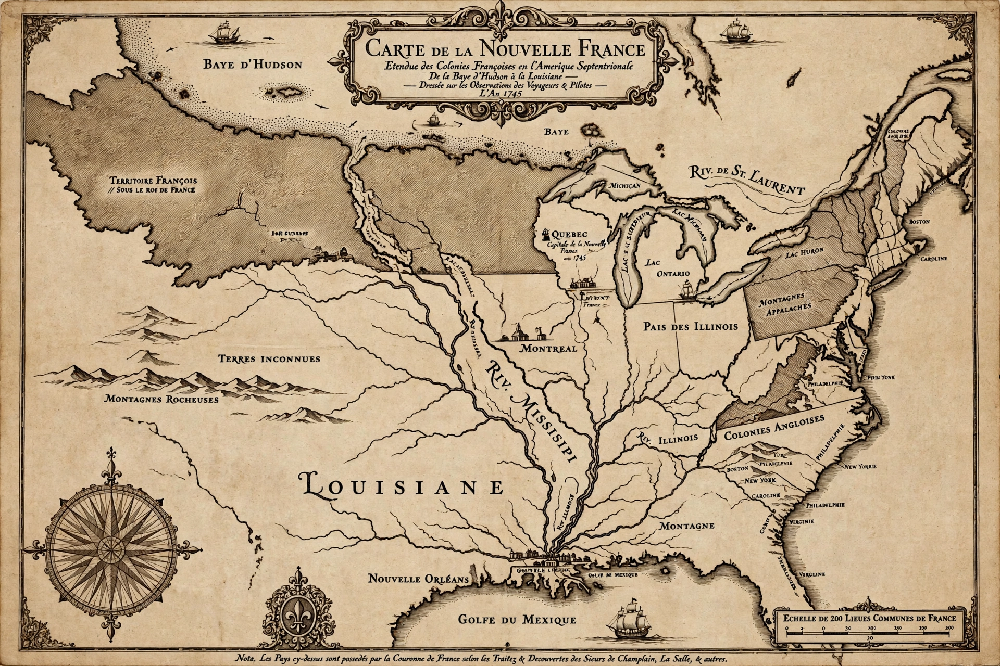

New France
New France (French: Nouvelle-France) was the territory colonized by France in North America, beginning with the exploration of the Gulf of Saint Lawrence by Jacques Cartier in 1534 and ending with the cession of New France to Great Britain and Spain in 1763 under the Treaty of Paris. At its territorial apex in 1712, New France comprised five administratively separate colonies: Canada (in the St. Lawrence valley), Acadia, Hudson Bay, Newfoundland (Plaisance) and Louisiana, stretching from Hudson Bay to the Gulf of Mexico and from Newfoundland to the Rocky Mountains.

| New France | |
|---|---|
| Status | Colony of the Kingdom of France |
| Period | 1534 – 1763 |
| Capital | Quebec City |
| Languages | French |
| Religion | Roman Catholicism |
History
Permanent settlement began with Samuel de Champlain's founding of Quebec in 1608. The colony developed slowly around the fur trade, conducted in alliance with the Huron-Wendat and Algonquin peoples and in conflict with the Iroquois Confederacy (Haudenosaunee). In 1663 Louis XIV made New France a royal province, sending soldiers, administrators such as intendant Jean Talon, and some 800 marriageable women (the filles du roi) to build the population. The colony's seigneurial system organised landholding along the St. Lawrence.
Explorers and missionaries extended French influence through the Great Lakes and down the Mississippi, claimed for France by La Salle in 1682. A series of wars with Britain and its colonies — culminating in the Seven Years' War (French and Indian War) — ended with the fall of Quebec in 1759 and Montreal in 1760. By the Treaty of Paris (1763) France ceded Canada and its Louisiana territory east of the Mississippi to Britain, and Louisiana west of the river to Spain; France retained only Saint Pierre and Miquelon.
Society
By 1760 Canada had about 70,000 French inhabitants, a small population compared with the 1.5 million in the British seaboard colonies, but one that formed a durable francophone society whose descendants — the Québécois, Acadians, Métis, Cajuns and French Louisianans — preserve its legacy today.